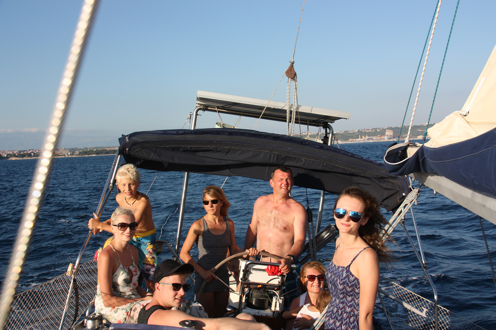
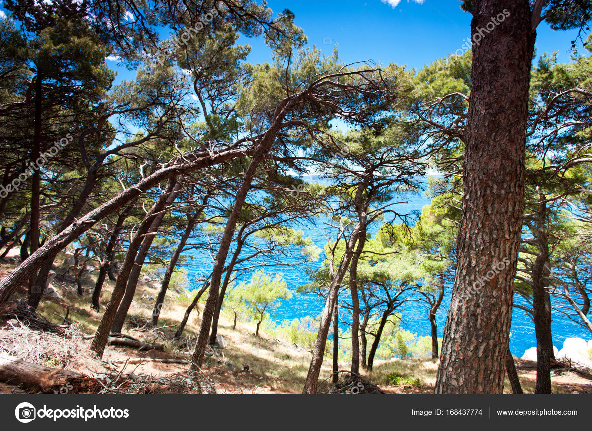

Ražanj

O nama
Tko smo to mi? Mi, preciznije moja obitelj i ja, autor ove stranice, smo obitelj koja je podarena zemljištem i kućom u Ražnju te bismo vrlo rado pokazali i reklamirali ovo malo mjestašce (i našu kuću naravno) kako bi ukazali neosvještenim surferima interneta na ljepote ovog dalmatinskog kraja.
Novijim generacijama "lakše" je u jednu ruku dijeliti znanje o ovom kraju jer se sve više trebaju iznajmljivati objekti na moru kako bi uopće bilo moguće održavati ih i plaćati režije. Rijetki su oni koji dovoljno zarađuju da njihov objekt na obali služi samo kao vikendica. No, ti ljudi drže tajnu samo za sebe i ne pridonose doživljaju ovog kamenitog, borovog kraja.
